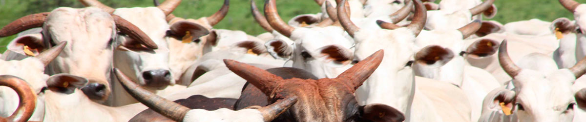

A pecuária de corte é um dos ramos de atividade que exerce o pecuarista, ou o criador de rebanho.
Existem tipos diferentes de pecuária de corte, variando de acordo com o tipo de rebanho a ser abatido como bovinos, caprinos e ovinos:
- O abate de novilho ou garrote, exige um rebanho mais aprimorado e maior tecnologia é chamada de corte novo ou abate de novilhos.
- De gado velho, o corte é denominado de abate velho ou gado de montaria. Não confundir com montaria de cavalgar (andar a cavalo).
- De gado confinado ou gado preso, esse tipo de abate é usado para engorda do gado e posterior abate, quando precisa-se de carne mais nobre e em maior quantidade.
- Seletivo, esse tipo de abate não é muito comum, pois usa-se costumeiramente, abater o animal doente e posteriormente incinerar sua carcaça. Esse tipo de abate, normalmente é realizado sob a supervisão da autoridade sanitária, pois normalmente abata-se os animais doentes e os que tiveram contato diretos, como medida de prevenção e erradicação da doença.
- No caso dos caprinos e ovinos o abate se dá dos 4 aos 6 meses pois é o período em que se atinge um peso de caraça por volta dos 40 kg, a depender da raça ou cruzamento industrial. O abate é feito precocemente por um odor característico que se manifesta nos animais a partir do 7 mês. É uma carne de excelente qualidade com baixos níveis de colesterol LDL.
Empreendimentos que obtiveram sucesso: